DDIA 阅读笔记第五章：复制
摘要
本章主要研究了复制（replication）这一技术在分布式场景下的使用，讨论了单领导者、多领导者、无领导者三种常用的变更算法，并对复制延迟相关的问题和解决方法进行了探讨。
简介
复制（replication）意味着在通过网络连接的多台机器上保留相同数据的副本（replica），可能出于各种各样的原因：
- 使得数据与用户在地理上接近（从而减少延迟）
- 即使系统的一部分出现故障，系统也能继续工作（从而提高可用性）
- 扩展可以接受读请求的机器数量（从而提高读取吞吐量）
本章将假设数据集非常小，== 每台机器都可以保存整个数据集的副本 ==。在第 6 章中将放宽这个假设，讨论对单个机器来说太大的数据集的分片（partitioning/sharding）。
复制的难点在于处理复制数据的变更（change）。本章将讨论三种流行的变更复制算法：
- 单领导者（single leader）
- 多领导者（multi leader）
- 无领导者（leaderless）
几乎所有分布式数据库都使用这三种方法之一。
在复制时需要进行许多权衡：例如，使用同步复制还是异步复制？如何处理失败的副本？这些通常是数据库中的配置选项，细节因数据库而异，但原理在许多不同的实现中都类似。
领导者与追随者
存储数据库拷贝的每个节点称为 副本（replica） 。
要确保所有数据都落在了所有的副本上，每一次向数据库的写入操作都需要传播到所有副本上。最常见的解决方案被称为 基于领导者的复制（leader-based replication） （也称主动 / 被动（active/passive） 或 主 / 从（master/slave）复制），如图 5-1 所示。它的工作原理如下：
- 副本之一被指定为 领导者（leader），也称为 主库（master|primary） 。当客户端要向数据库写入时，它必须将请求发送给领导者，领导者会将新数据写入其本地存储。
- 其他副本被称为追随者（followers），亦称为只读副本（read replicas），从库（slaves），备库（ sencondaries），热备（hot-standby）。每当领导者将新数据写入本地存储时，它也会将数据变更发送给所有的追随者，称之为复制日志（replication log）* 记录或 * 变更流（change stream）。每个跟随者从领导者拉取日志，并更新其本地数据库副本，按照领导者处理的相同顺序应用所有写入。
- 当客户想要从数据库中读取数据时，它可以向领导者或追随者查询。
- 只有领导者才能接受写操作
- 从客户端的角度来看从库都是只读的
不同的人对 热（hot），温（warn） ， 冷（cold） 备份服务器有不同的定义。 例如在 PostgreSQL 中，热备（hot standby）指的是能接受客户端读请求的副本。而温备（warm standby）只是追随领导者，但不处理客户端的任何查询。 就本书而言，这些差异并不重要。
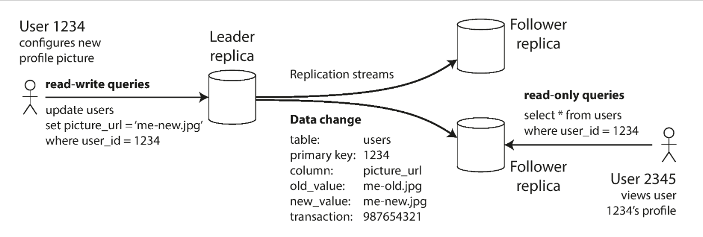
图 5-1 基于领导者 (主 - 从) 的复制
应用：
- 这种复制模式是许多关系数据库的内置功能，如 PostgreSQL（从 9.0 版本开始），MySQL，Oracle Data Guard 【2】和 SQL Server 的 AlwaysOn 可用性组【3】。
- 它也被用于一些非关系数据库，包括 MongoDB，RethinkDB 和 Espresso 【4】。
- 基于领导者的复制并不仅限于数据库：像 Kafka 【5】和 RabbitMQ 高可用队列【6】这样的分布式消息代理也使用它。 某些网络文件系统，例如 DRBD 这样的块复制设备也与之类似。
同步复制与异步复制
复制系统的一个重要细节是：复制是同步（synchronously）发生还是异步（asynchronously）发生。 （在关系型数据库中这通常是一个配置项，其他系统通常硬编码为其中一个）。
对于用户发起的写请求：
- 同步复制：leader 向 follower 发送复制日志后，等待 follower 的收到确认，才会响应用户
- 异步复制：leader 写入本地存储即可响应用户，无需等待 follower 确认复制日志
通常情况下，复制的速度相当快：大多数数据库系统能在一秒向从库应用变更，但它们不能提供复制用时的保证。有些情况下，从库可能落后主库几分钟或更久；例如：从库正在从故障中恢复，系统在最大容量附近运行，或者如果节点间存在网络问题。
同步复制优劣
- 优点：从库保证有与主库一致的最新数据副本。如果主库突然失效，我们可以确信这些数据仍然能在从库上上找到。
- 缺点：如果同步从库没有响应（比如它已经崩溃，或者出现网络故障），主库就无法处理写入操作。主库必须阻止所有写入，并等待同步副本再次可用。
- 将所有从库都设置为同步是不切实际的：任何一个节点的中断都会导致整个系统无法工作。
实际上，如果在数据库上启用同步复制，通常意味着 == 其中一个跟随者是同步的，而其他的则是异步的 ==。如果同步从库变得不可用或缓慢，则使一个异步从库同步。这保证你至少在两个节点上拥有最新的数据副本：主库和同步从库。 这种配置有时也被称为 == 半同步（semi-synchronous）==【7】。
通常情况下，基于领导者的复制都配置为完全异步。 在这种情况下：
- 优点：即使所有的从库都落后了，主库也可以继续处理写入。
- 缺点：如果主库失效且不可恢复，则任何尚未复制给从库的写入都会丢失。 这意味着即使已经向客户端确认成功，写入也不能保证 持久（Durable） 。
弱化的持久性可能听起来像是一个坏的折衷，无论如何，异步复制已经被广泛使用了，特别当有很多追随者，或追随者异地分布时。
对于异步复制系统而言，主库故障时有可能丢失数据。这可能是一个严重的问题，因此研究人员仍在研究不丢数据但仍能提供良好性能和可用性的复制方法。 例如，链式复制【8,9】] 是同步复制的一种变体，已经在一些系统（如 Microsoft Azure 存储【10,11】）中成功实现。
设置新从库
有时候需要设置一个新的从库：也许是为了增加副本的数量，或替换失败的节点。如何确保新的从库拥有主库数据的精确副本？
- 简单地将数据文件从节点复制到另一节点通常是不够的：客户端不断向数据库写入数据，数据总是在不断变化。
- 可以通过锁定数据库（使其不可用于写入）来使磁盘上的文件保持一致，但是这会违背高可用的目标。
拉起新的从库通常并不需要停机。从概念上讲，过程如下所示：
- 在某个时刻获取主库的一致性快照（如果可能），而不必锁定整个数据库。大多数数据库都具有这个功能，因为它是备份必需的。对于某些场景，可能需要第三方工具，例如 MySQL 的 innobackupex 【12】。
- 将快照复制到新的从库节点。
- 从库连接到主库，并拉取快照之后发生的所有数据变更。这要求快照与主库复制日志中的位置精确关联。该位置有不同的名称：例如，PostgreSQL 将其称为 日志序列号（log sequence number, LSN），MySQL 将其称为 二进制日志坐标（binlog coordinates）。
- 当从库处理完快照之后积压的数据变更，我们说它赶上（caught up）了主库。现在它可以继续处理主库产生的数据变化了。
（这就体现出 “最终一致性” 的奥妙了）
建立从库的实际步骤因数据库而异。在某些系统中，这个过程是完全自动化的，而在另外一些系统中，它可能是一个需要由管理员手动执行的、多步骤工作流。
处理节点失效
从库失效：追赶恢复
从库将主库收到的数据变更记录在其本地磁盘上。如果从库崩溃并重新启动，或主库和从库之间的网络暂时中断，则比较容易恢复：
- 从库可以从日志中知道，在发生故障之前处理的最后一个事务。
- 从库可以连接到主库，并 == 请求在从库断开连接时发生的所有数据变更 ==。当应用完所有这些变化后，它就赶上了主库，并可以像以前一样继续接收数据变更流。
主库失效：故障切换
主库失效处理起来相当棘手：其中一个从库需要被提升为新的主库，需要重新配置客户端，以将它们的写操作发送给新的主库，其他从库需要开始拉取来自新主库的数据变更。这个过程被称为故障切换（failover）。
故障切换可以手动进行（通知管理员主库挂了，并采取必要的步骤来创建新的主库）或自动进行。自动故障切换过程通常由以下步骤组成：
- 如果不是因维护故意关闭主库，首先要确认主库是否真的失效。大多数系统只是简单使用 超时（Timeout） ：节点频繁地相互来回传递消息，并且如果一个节点在一段时间内（例如 30 秒）没有响应，就认为它挂了。
- 选择一个新的主库。这可以通过选举过程（主库由剩余副本以多数选举产生）来完成，或者可以由之前选定的控制器节点（controller node）来指定新的主库。
- 主库的最佳人选通常是拥有旧主库最新数据副本的从库（最小化数据损失）。
- 让所有的节点同意一个新的领导者，是一个共识问题，将在第 9 章详细讨论。
- 重新配置系统以启用新的主库。
- 客户端现在需要将它们的写请求发送给新主库。
- 老主库变为从库：如果老主库宕机恢复，可能仍然认为自己是主库，没有意识到其他副本已经让它下台了。系统需要确保老主库认可新主库，成为一个从库。
故障切换会出现很多麻烦：
- 异步复制下，新主库可能没有收到老主库宕机前最后的写入操作。在选出新主库后，如果老主库重新加入集群，新主库在此期间可能会收到冲突的写入，那这些写入该如何处理？最常见的解决方案是简单丢弃老主库未复制的写入，这很可能打破客户对于数据持久性的期望。
- 如果数据库需要和其他外部存储相协调，那么 == 丢弃写入内容是极其危险的操作 ==。
- 例如在 GitHub 【13】的一场事故中，一个过时的 MySQL 从库被提升为主库。数据库使用自增 ID 作为主键，因为新主库的计数器落后于老主库的计数器，所以新主库重新分配了一些已经被老主库分配掉的 ID 作为主键。这些主键也在 Redis 中使用，主键重用使得 MySQL 和 Redis 中数据产生不一致，最后导致一些私有数据泄漏到错误的用户手中。
- 发生某些故障时可能会出现两个节点都以为自己是主库的情况。这种情况称为 脑裂 (split brain)，非常危险：如果两个主库都可以接受写操作，却没有冲突解决机制（参见 “多领导者复制”），那么数据就可能丢失或损坏。
- 一些系统采取了安全防范措施：当检测到两个主库节点同时存在时会关闭其中一个节点，但设计粗糙的机制可能最后会导致两个节点都被关闭【14】。
- 主库被宣告失效的超时时间应该怎么配置？
- 在主库真实失效的情况下，超时时间越长，意味着恢复时间也越长。
- 如果超时设置太短，又可能会出现不必要的故障切换。例如，临时负载峰值可能导致节点的响应时间超时，或网络故障可能导致数据包延迟。如果系统已经处于高负载或网络问题的困扰之中，那么不必要的故障切换可能会让情况变得更糟糕。
这些问题没有简单的解决方案。因此，即使软件支持自动故障切换，不少运维团队还是更愿意手动执行故障切换。
节点故障、不可靠的网络、对副本一致性，持久性，可用性和延迟的权衡 ，这些问题实际上是分布式系统中的基本问题。第 8 章和第 9 章将更深入地讨论它们。
复制日志的实现
基于主库的复制底层是如何工作的？实践中有好几种不同的复制方式。
基于语句的复制
在最简单的情况下，主库记录下它执行的每个写入请求（语句（statement））并将该语句日志发送给其从库。对于关系数据库来说，这意味着每个 INSERT，UPDATE 或 DELETE 语句都被转发给每个从库，每个从库解析并执行该 SQL 语句，就像从客户端收到一样。
虽然听上去很合理，但有很多问题会搞砸这种复制方式：
- 任何调用非确定性函数（nondeterministic）的语句，可能会在每个副本上生成不同的值。例如，使用
NOW()获取当前日期时间，或使用RAND()获取一个随机数。 - 如果语句使用了自增列（auto increment），或者依赖于数据库中的现有数据（例如，
UPDATE ... WHERE <某些条件>），则必须在每个副本上按照完全相同的顺序执行它们，否则可能会产生不同的效果。当有多个并发执行的事务时，这可能成为一个限制。 - 有副作用的语句（例如，触发器，存储过程，用户定义的函数）可能会在每个副本上产生不同的副作用，除非副作用是绝对确定的。
的确有办法绕开这些问题 —— 例如，当语句被记录时，主库可以用固定的返回值替换任何不确定的函数调用，以便从库获得相同的值。但是由于边缘情况实在太多了，现在通常会选择其他的复制方法。
基于语句的复制在 5.1 版本前的 MySQL 中使用。因为它相当紧凑，现在有时也还在用。现在 == 在默认情况下，如果语句中存在任何不确定性，MySQL 会切换到基于行的复制 ==。 VoltDB 使用了基于语句的复制，但要求事务必须是确定性的，以此来保证安全【15】。
传输预写式日志（WAL）
通常写操作都是追加到日志中：
- 对于日志结构存储引擎，日志是主要的存储位置。日志段在后台压缩，并进行垃圾回收。
- 对于覆写单个磁盘块的 B 树，每次修改都会先写入 预写式日志（Write Ahead Log, WAL），以便崩溃后索引可以恢复到一致的状态。
在任何一种情况下，日志都是包含所有数据库写入的仅追加字节序列。可以使用完全相同的日志在另一个节点上构建副本：除了将日志写入磁盘之外，主库还可以通过网络将其发送给其从库。
当从库应用这个日志时，它会建立和主库一模一样数据结构的副本。
PostgreSQL 和 Oracle 等使用这种复制方法【16】。主要缺点是日志记录的数据非常底层：WAL 包含哪些磁盘块中的哪些字节发生了更改。这使复制与存储引擎紧密耦合。== 如果数据库将其存储格式从一个版本更改为另一个版本，通常不可能在主库和从库上运行不同版本的数据库软件。==
看上去这可能只是一个微小的实现细节，但却可能对运维产生巨大的影响。如果复制协议允许从库使用比主库更新的软件版本，则可以先升级从库，然后执行故障切换，使升级后的节点之一成为新的主库，从而执行数据库软件的零停机升级。如果复制协议不允许版本不匹配（传输 WAL 经常出现这种情况），则此类升级需要停机。
逻辑日志复制（基于行）
另一种方法是，复制和存储引擎使用不同的日志格式，这样可以使复制日志从存储引擎内部分离出来。这种复制日志被称为逻辑日志，以将其与存储引擎的（物理）数据表示区分开来。
== 关系数据库的逻辑日志通常是以行的粒度描述对数据库表的写入的记录序列 ==：
- 对于插入的行，日志包含所有列的新值。
- 对于删除的行，日志包含足够的信息来唯一标识已删除的行。通常是主键，但是如果表上没有主键，则需要记录所有列的旧值。
- 对于更新的行，日志包含足够的信息来唯一标识更新的行，以及所有列的新值（或至少所有已更改的列的新值）。
修改多行的事务会生成多个这样的日志记录，后面跟着一条记录，指出事务已经提交。 MySQL 的二进制日志（当配置为使用基于行的复制时）使用这种方法【17】。
== 由于逻辑日志与存储引擎内部分离，因此可以更容易地保持向后兼容，从而使领导者和跟随者能够运行不同版本的数据库软件甚至不同的存储引擎。==
对于外部应用程序来说，逻辑日志格式也更容易解析。如果要将数据库的内容发送到外部系统（如数据），这一点很有用，例如复制到数据仓库进行离线分析，或建立自定义索引和缓存【18】。 这种技术被称为 数据变更捕获（change data capture）。
基于触发器的复制
到目前为止描述的复制方法是由数据库系统实现的，不涉及任何应用程序代码。在很多情况下，这就是你想要的。但在某些情况下需要更多的灵活性。例如，如果您只想复制数据的一个子集，或者想从一种数据库复制到另一种数据库，或者如果您需要冲突解决逻辑（参阅 “处理写入冲突”），则可能需要将复制移动到应用程序层。
一些工具，如 Oracle Golden Gate 【19】，可以通过读取数据库日志，使得其他应用程序可以使用数据。另一种方法是使用许多关系数据库自带的功能：触发器和存储过程。
触发器允许您注册在数据库系统中发生数据更改（写入事务）时自动执行的自定义应用程序代码。触发器有机会将更改记录到一个单独的表中，使用外部程序读取这个表，再加上任何业务逻辑处理，会后将数据变更复制到另一个系统去。例如，Databus for Oracle 【20】和 Bucardo for Postgres 【21】就是这样工作的。
基于触发器的复制通常比其他复制方法具有更高的开销，并且比数据库的内置复制更容易出错，也有很多限制。然而由于其灵活性，仍然是很有用的。
复制延迟问题
容忍节点故障只是需要复制的一个原因。另一个原因是可扩展性（处理比单个机器更多的请求）和延迟（让副本在地理位置上更接近用户）。
基于主库的复制要求所有写入都由单个节点处理，但只读查询可以由任何副本处理。所以对于读多写少的场景（Web 上的常见模式），一个有吸引力的选择是创建很多从库，并将读请求分散到所有的从库上去。这样能减小主库的负载，并允许向最近的副本发送读请求。
在这种扩展体系结构中，只需添加更多的追随者，就可以提高只读请求的服务容量。但是，这种方法实际上 == 只适用于异步复制 ==—— 如果尝试同步复制到所有追随者，则单个节点故障或网络中断将使整个系统无法写入。而且越多的节点越有可能会被关闭，所以完全同步的配置是非常不可靠的。
不幸的是，当应用程序 == 从异步从库读取时，如果从库落后，它可能会看到过时的信息 ==。这会导致数据库中出现明显的不一致：同时对主库和从库执行相同的查询，可能得到不同的结果，因为并非所有的写入都反映在从库中。这种不一致只是一个暂时的状态 ——== 如果停止写入数据库并等待一段时间，从库最终会赶上并与主库保持一致 ==。出于这个原因，这种效应被称为 最终一致性（eventually consistency）
“最终” 一词故意含糊不清：总的来说，副本落后的程度是没有限制的。在正常的操作中，复制延迟（replication lag），即写入主库到反映至从库之间的延迟，可能仅仅是几分之一秒，在实践中并不显眼。但如果系统在接近极限的情况下运行，或网络中存在问题，延迟可以轻而易举地超过几秒，甚至几分钟。
因为滞后时间太长引入的不一致性，可不仅是一个理论问题，更是应用设计中会遇到的真实问题。本节将重点介绍三个由复制延迟问题的例子，并简述解决这些问题的一些方法。
读己之写
许多应用允许用户提交一些数据，然后查看他们提交的内容。
- 提交新数据时，必须将其发送给主库
- 但是当用户查看数据时，可以通过从库进行读取
如果数据经常被查看，但只是偶尔写入，这是非常合适的。
对于异步复制，如果用户在写入后马上就查看数据，则新数据可能尚未到达副本。对用户而言，看起来好像是刚提交的数据丢失了，所以他们不高兴是可以理解的。
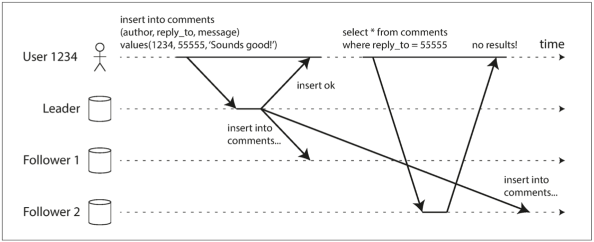
图 5-3 用户写入后从旧副本中读取数据。需要写后读 (read-after-write) 的一致性来防止这种异常
在这种情况下，需要 写后读一致性（read-after-write consistency），也称为 读己之写一致性（read-your-writes consistency）【24】。这是一个保证，如果用户重新加载页面，他们总会看到他们自己提交的任何更新。它不会对其他用户的写入做出承诺：其他用户的更新可能稍等才会看到。它保证用户自己的输入已被正确保存。
如何在基于领导者的复制系统中实现写后读一致性？有各种可能的技术，这里说一些：
== 对于用户可能修改过的内容，总是从主库读取 ==；这就要求得有办法不通过实际的查询就可以知道用户是否修改了某些东西。
- 举个例子，社交网络上的用户个人资料信息通常只能由用户本人编辑，而不能由其他人编辑。因此一个简单的规则就是：总是从主库读取用户自己的档案，如果要读取其他用户的档案就去从库。
如果应用中的大部分内容都可能被用户编辑，那这种方法就没用了，因为大部分内容都必须从主库读取。在这种情况下可以使用其他标准来决定是否从主库读取。
- 例如可以跟踪上次更新的时间，在上次更新后的一分钟内，从主库读。还可以监控从库的复制延迟，防止向任何滞后主库超过一分钟的从库发出查询。
客户端可以记住最近一次写入的时间戳，系统需要确保从库在处理该用户的读取请求时，该时间戳前的变更都已经传播到了本从库中。如果当前从库不够新，则可以从另一个从库读取，或者等待从库追赶上来。
- 这里的时间戳可以是逻辑时间戳（表示写入顺序的东西，例如日志序列号）或实际的系统时钟（在这种情况下，时钟同步变得至关重要，请参阅 “不可靠的时钟”）。
如果你的副本分布在多个数据中心（为了在地理上接近用户或者出于可用性目的），还会有额外的复杂性。任何需要由主库提供服务的请求都必须路由到包含该主库的数据中心。
另一种复杂的情况发生在同一位用户从多个设备（例如桌面浏览器和移动 APP）请求服务的时候。这种情况下可能就需要提供跨设备的写后读一致性：如果用户在一个设备上输入了一些信息，然后在另一个设备上查看，则应该看到他们刚输入的信息。
在这种情况下，还有一些需要考虑的问题：
- 记住用户上次更新时间戳的方法变得更加困难，因为一个设备上运行的程序不知道另一个设备上发生了什么。需要对这些元数据进行中心化的存储。
- 如果副本分布在不同的数据中心，很难保证来自不同设备的连接会路由到同一数据中心。（例如，用户的台式计算机使用家庭宽带连接，而移动设备使用蜂窝数据网络，则设备的网络路由可能完全不同）。如果你的方法需要读主库，可能首先需要把来自该用户所有设备的请求都路由到同一个数据中心。
单调读
在从异步从库读取时可能发生的异常的第二个例子是用户可能会遇到 时光倒流（moving backward in time）。
用户从不同从库进行多次读取，就可能发生这种情况。例如，一个查询评论列表的读取场景，用户刷新网页时每个请求都被路由到一个随机的服务器，就可能出现用户 2345：
- 首先查询了一个延迟很小的从库，查询返回了最近由用户 1234 添加的评论
- 然后查询了一个延迟较大的从库，查询不返回任何东西，因为滞后的从库还没有拉取到该写入内容。实际上可以认为第二个查询是在比第一个查询更早的时间点上观察系统。
如果第一个查询没有返回任何内容，那问题并不大，因为 可能不知道用户 1234 最近添加了评论。但如果用户 2345 先看见用户 1234 的评论，然后又看到它消失，这就会让人觉得非常困惑了。
单调读（monotonic reads）【23】可以保证这种异常不会发生。这是一个比 强一致性（strong consistency） 更弱，但比 最终一致性（eventual consistency） 更强的保证。当读取数据时，你可能会看到一个旧值；单调读仅意味着如果用户顺序地进行多次读取，他们不会看到时间回退，也就是说，如果已经读取到较新的数据，后续的读取不会得到更旧的数据。
== 实现单调读的一种方式是确保每个用户总是从同一副本进行读取 ==（不同的用户可以从不同的副本读取）。例如，可以基于用户 ID 的散列来选择副本，而不是随机选择副本。但是，如果该副本出现故障，用户的查询将需要重新路由到另一个副本。
一致前缀读
第三个复制延迟异常的例子违反了因果律。 想象一下 Poons 先生和 Cake 夫人之间的以下简短对话：
Mr. Poons
Mrs. Cake，你能看到多远的未来？
Mrs. Cake
通常约十秒钟，Mr. Poons.
这两句话之间有因果关系：Cake 夫人听到了 Poons 先生的问题并回答了这个问题。
现在，想象第三个人正在通过从库来听这个对话。 Cake 夫人说的内容是从一个延迟很低的从库读取的，但 Poons 先生所说的内容，从库的延迟要大的多（见 图 5-5）。于是，这个观察者会听到以下内容：
Mrs. Cake
通常约十秒钟，Mr. Poons.
Mr. Poons
Mrs. Cake，你能看到多远的未来？
对于观察者来说，看起来好像 Cake 夫人在 Poons 先生提问前就回答了这个问题。这种超能力让人印象深刻，但也会把人搞糊涂。【25】。
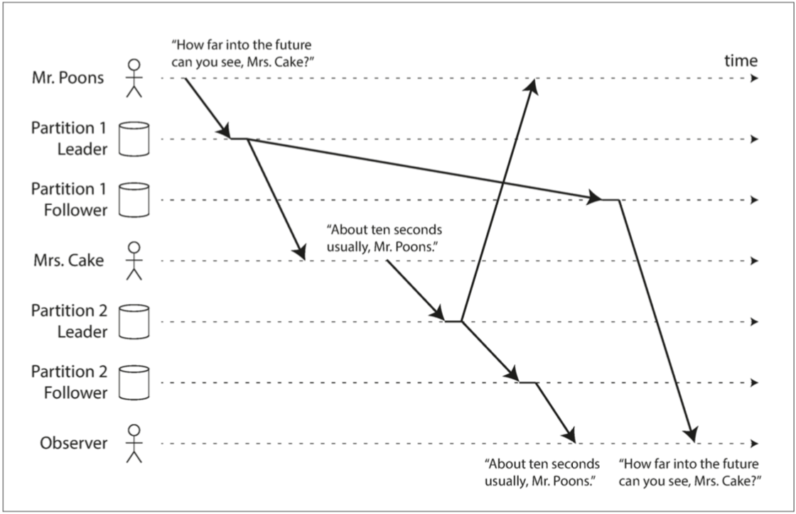
图 5-5 如果某些分区的复制速度慢于其他分区，那么观察者可能会在看到问题之前先看到答案。
要防止这种异常，需要另一种类型的保证：一致前缀读（consistent prefix reads）【23】。这个保证的意思是说：如果一系列写入按某个顺序发生，那么任何人读取这些写入时，也会看见它们以同样的顺序出现。
这是 分区（partitioned） 或 分片（sharded） 数据库中的一个特殊问题：
- 如果数据库总是以相同的顺序应用写入，例如上面的单 leader 场景，读取总是看到一致的前缀，这种异常不会发生。
- 但是在许多分布式数据库中，不同的分区独立运行，因此不存在 全局的写入顺序：当用户从数据库中读取数据时，各个分区分别读取，可能会看到数据库的某些部分处于较旧的状态，而某些则处于较新的状态。
解决方案：
- 确保任何因果相关的写入都写入相同的分区，但在一些应用中可能无法高效地完成这种操作。
- 显式跟踪因果依赖关系，参考 ““此前发生” 的关系和并发” 。
复制延迟的解决方案
在使用最终一致的系统时，如果复制延迟增加到几分钟甚至几小时，则应该考虑应用程序的行为。如果答案是 “没问题”，那很好。但如果结果对于用户来说是不好的体验，那么设计系统来提供更强的保证（例如 写后读）是很重要的。明明是异步复制却假设复制是同步的，这是很多麻烦的根源。
如前所述，应用程序可以提供比底层数据库更强有力的保证，例如通过主库进行某种读取。但在应用程序代码中处理这些问题是复杂的，容易出错。
如果应用程序开发人员不必担心微妙的复制问题，并可以信赖他们的数据库 “做了正确的事情”，那该多好呀。这就是 事务（transaction） 存在的原因：数据库通过事务提供强大的保证，所以应用程序可以更加简单。
单节点事务已经存在了很长时间。然而在走向分布式（复制和分区）数据库时，许多系统放弃了事务，声称事务在性能和可用性上的代价太高，并断言在可伸缩系统中最终一致性是不可避免的。这个叙述有一些道理，但过于简单了，本书其余部分将提出更为细致的观点。我们将在 第七章 和 第九章 回到事务的话题，并将在 第三部分 讨论一些替代机制。
多主复制
基于单个领导者的复制有一个主要的缺点：只有一个主库，而所有的写入都必须通过它。如果出于任何原因（例如和主库之间的网络连接中断）无法连接到主库， 就无法向数据库写入。
如果数据库被分区（见第 6 章），每个分区都有一个领导。 不同的分区可能在不同的节点上有其领导者，但是每个分区必须有一个领导者节点
基于领导者的复制模型的自然延伸是允许多个节点接受写入。 复制仍然以同样的方式发生：处理写入的每个节点都必须将该数据更改转发给所有其他节点。 称之为多领导者配置（也称多主、多活复制）。 在这种情况下，每个领导者同时扮演其他领导者的追随者。
多主复制的应用场景
- 常用于多数据中心场景
- 在单个数据中心内部使用多个主库基本无意义，因为好处很少超过复杂性的代价。 但在一些情况下，多活配置是也合理的。
运维多个数据中心
假如你有一个数据库，副本分散在好几个不同的数据中心（也许这样可以容忍单个数据中心的故障，或地理上更接近用户）。 使用常规的基于领导者的复制设置，主库必须位于其中一个数据中心，且所有写入都必须经过该数据中心。
多领导者配置中可以在每个数据中心都有主库。 图 5-6 展示了这个架构的样子。 在每个数据中心内使用常规的主从复制；在数据中心之间，每个数据中心的主库都会将其更改复制到其他数据中心的主库中。

图 5-6 跨多个数据中心的多主复制
我们来比较一下在运维多个数据中心时，单主和多主的适应情况。
性能
- 在单活配置中，每个写入都必须穿过互联网，进入主库所在的数据中心。这可能会增加写入时间，并可能违背了设置多个数据中心的初心。
- 在多活配置中，每个写操作都可以在本地数据中心进行处理，并与其他数据中心异步复制。因此，数据中心之间的网络延迟对用户来说是透明的，这意味着感觉到的性能可能会更好。
容忍数据中心停机
- 在单主配置中，如果主库所在的数据中心发生故障，故障切换可以使另一个数据中心里的追随者成为领导者。
- 在多活配置中，每个数据中心可以独立于其他数据中心继续运行，并且当发生故障的数据中心归队时，复制会自动赶上。
容忍网络问题
- 数据中心之间的通信通常穿过公共互联网，这可能不如数据中心内的本地网络可靠。单主配置对这数据中心间的连接问题非常敏感，因为通过这个连接进行的写操作是同步的。
- 采用异步复制功能的多活配置通常能更好地承受网络问题：临时的网络中断并不会妨碍正在处理的写入。
有些数据库默认情况下支持多主配置，但使用外部工具实现也很常见，例如用于 MySQL 的 Tungsten Replicator 【26】，用于 PostgreSQL 的 BDR【27】以及用于 Oracle 的 GoldenGate 【19】。
尽管多主复制有这些优势，但也有一个很大的缺点：两个不同的数据中心可能会同时修改相同的数据，写冲突是必须解决的（如图 5-6 中 “冲突解决”）。本书将在 “处理写入冲突” 中详细讨论这个问题。
由于多主复制在许多数据库中都属于改进的功能，所以常常存在微妙的配置缺陷，且经常与其他数据库功能之间出现意外的反应。例如自增主键、触发器、完整性约束等，都可能会有麻烦。因此，== 多主复制往往被认为是危险的领域，应尽可能避免 ==【28】。
需要离线操作的客户端
多主复制的另一种适用场景是：应用程序在断网之后仍然需要继续工作。
例如，考虑手机，笔记本电脑和其他设备上的日历应用。无论设备目前是否有互联网连接，你需要能随时查看你的会议（发出读取请求），输入新的会议（发出写入请求）。如果在离线状态下进行任何更改，则设备下次上线时，需要与服务器和其他设备同步。
在这种情况下，每个设备都有一个充当领导者的本地数据库（它接受写请求），并且在所有设备上的日历副本之间同步时，存在异步的多主复制过程。复制延迟可能是几小时甚至几天，具体取决于何时可以访问互联网。
从架构的角度来看，这种设置实际上与数据中心之间的多领导者复制类似，每个设备都是一个 “数据中心”，而它们之间的网络连接是极度不可靠的。从历史上各类日历同步功能的破烂实现可以看出，想把多活配好是多么困难的一件事。
有一些工具旨在使这种多领导者配置更容易。例如，CouchDB 就是为这种操作模式而设计的【29】。
协同编辑
实时协作编辑应用程序允许多个人同时编辑文档。例如，Etherpad 【30】和 Google Docs 【31】允许多人同时编辑文本文档或电子表格（该算法在 “自动冲突解决” 中简要讨论）。我们通常不会将协作式编辑视为数据库复制问题，但与前面提到的离线编辑用例有许多相似之处。当一个用户编辑文档时，所做的更改将立即应用到其本地副本（Web 浏览器或客户端应用程序中的文档状态），并异步复制到服务器和编辑同一文档的任何其他用户。
如果要保证不会发生编辑冲突，则应用程序必须先取得文档的锁定，然后用户才能对其进行编辑。如果另一个用户想要编辑同一个文档，他们首先必须等到第一个用户提交修改并释放锁定。这种协作模式相当于单领导者复制，仅在领导者上进行写操作。
但是，为了加速协作，您可能希望将更改的单位设置得非常小（例如，一次按键），并避免锁定。这种方法允许多个用户同时进行编辑，但同时也带来了多领导者复制的所有挑战，包括需要解决冲突【32】。
处理写入冲突
多领导者复制的最大问题是可能发生写冲突，这意味着需要解决冲突。
例如，考虑一个由两个用户同时编辑的维基页面，如图 5-7 所示。用户 1 将页面的标题从 A 更改为 B，并且用户 2 同时将标题从 A 更改为 C。每个用户的更改已成功应用到其本地主库。但当异步复制时，会发现冲突【33】。单主数据库中不会出现此问题。
{kind=link}
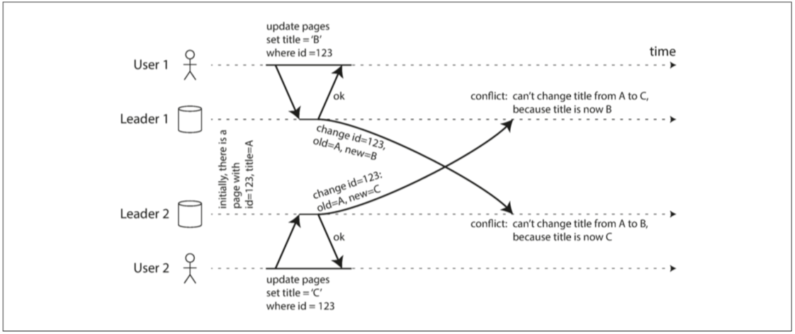
图 5-7 两个主库同时更新同一记录引起的写入冲突
同步与异步冲突检测
在单主数据库中，第二个写入将被阻塞，并等待第一个写入完成，或中止第二个写入事务，强制用户重试。另一方面，在多活配置中，两个写入都是成功的，并且在稍后的时间点仅仅异步地检测到冲突。那时要求用户解决冲突可能为时已晚。
原则上，可以使冲突检测同步 - 即等待写入被复制到所有副本，然后再告诉用户写入成功。但是，通过这样做，您将失去多主复制的主要优点：允许每个副本独立接受写入。如果您想要同步冲突检测，那么您可以使用单主程序复制。
避免冲突
处理冲突的最简单的策略就是避免它们：如果应用程序可以确保特定记录的所有写入都通过同一个领导者，那么冲突就不会发生。由于多领导者复制处理的许多实现冲突相当不好，避免冲突是一个经常推荐的方法【34】。
- 类似于分片的单 leader 场景
例如，在用户可以编辑自己的数据的应用程序中，可以确保来自特定用户的请求始终路由到同一数据中心，并使用该数据中心的领导者进行读写。不同的用户可能有不同的 “家庭” 数据中心（可能根据用户的地理位置选择），但从任何用户的角度来看，配置基本上都是单一的领导者。
但是，有时您可能需要更改指定的记录的主库 —— 可能是因为一个数据中心出现故障，您需要将流量重新路由到另一个数据中心，或者可能是因为用户已经迁移到另一个位置，现在更接近不同的数据中心。在这种情况下，冲突避免会中断，你必须处理不同主库同时写入的可能性。
收敛至一致的状态
单主数据库按顺序应用写操作：如果同一个字段有多个更新，则最后一个写操作将确定该字段的最终值。
在多主配置中，写入顺序没有定义，所以最终值应该是什么并不清楚。在图 5-7 中，在主库 1 中标题首先更新为 B 而后更新为 C；在主库 2 中，首先更新为 C，然后更新为 B。两个顺序都不是 “更正确” 的。
如果每个副本只是按照它看到写入的顺序写入，那么数据库最终将处于不一致的状态：最终值将是在主库 1 的 C 和主库 2 的 B。这是不可接受的，每个复制方案都必须确保数据在所有副本中最终都是相同的。因此，数据库必须以一种收敛（convergent）的方式解决冲突，这意味着所有副本必须在所有变更复制完成时收敛至一个相同的最终值。
实现冲突合并解决有多种途径：
- 给每个写入一个唯一的 ID（例如，一个时间戳，一个长的随机数，一个 UUID 或者一个键和值的哈希），挑选最高 ID 的写入作为胜利者，并丢弃其他写入。如果使用时间戳，这种技术被称为最后写入胜利（LWW, last write wins）。虽然这种方法很流行，但是很容易造成数据丢失【35】。我们将在本章末尾更详细地讨论 LWW。
- 为每个副本分配一个唯一的 ID，ID 编号更高的写入具有更高的优先级。这种方法也意味着数据丢失。
- 以某种方式将这些值合并在一起 - 例如，按字母顺序排序，然后连接它们（在图 5-7 中，合并的标题可能类似于 “B/C”）。
- 在保留所有信息的显式数据结构中记录冲突，并编写解决冲突的应用程序代码（也许通过提示用户的方式）。
自定义冲突解决逻辑
作为解决冲突最合适的方法可能取决于应用程序，大多数多主复制工具允许使用应用程序代码编写冲突解决逻辑。该代码可以在写入或读取时执行：
写时执行
只要数据库系统检测到复制更改日志中存在冲突，就会调用冲突处理程序。例如，Bucardo 允许您为此编写一段 Perl 代码。这个处理程序通常不能提示用户 —— 它在后台进程中运行，并且必须快速执行。
读时执行
当检测到冲突时，所有冲突写入被存储。下一次读取数据时，会将这些多个版本的数据返回给应用程序。应用程序可能会提示用户或自动解决冲突，并将结果写回数据库。例如，CouchDB 以这种方式工作。
请注意，冲突解决通常适用于单个行或文档层面，而不是整个事务【36】。因此，如果您有一个事务会原子性地进行几次不同的写入（请参阅第 7 章），则对于冲突解决而言，每个写入仍需分开单独考虑。
题外话：自动冲突解决
冲突解决规则可能很快变得复杂，并且自定义代码可能容易出错。亚马逊是一个经常被引用的例子，由于冲突解决处理程序令人惊讶的效果：一段时间以来，购物车上的冲突解决逻辑将保留添加到购物车的物品，但不包括从购物车中移除的物品。因此，顾客有时会看到物品重新出现在他们的购物车中，即使他们之前已经被移走【37】。
已经有一些有趣的研究来自动解决由于数据修改引起的冲突。有几行研究值得一提：
- 无冲突复制数据类型（Conflict-free replicated datatypes）（CRDT）【32,38】是可以由多个用户同时编辑的集合，映射，有序列表，计数器等的一系列数据结构，它们以合理的方式自动解决冲突。一些 CRDT 已经在 Riak 2.0 中实现【39,40】。
- 可合并的持久数据结构（Mergeable persistent data structures）【41】显式跟踪历史记录，类似于 Git 版本控制系统，并使用三向合并功能（而 CRDT 使用双向合并）。
- 可执行的转换（operational transformation）[42] 是 Etherpad 【30】和 Google Docs 【31】等合作编辑应用背后的冲突解决算法。它是专为同时编辑项目的有序列表而设计的，例如构成文本文档的字符列表。
这些算法在数据库中的实现还很年轻，但很可能将来它们将被集成到更多的复制数据系统中。自动冲突解决方案可以使应用程序处理多领导者数据同步更为简单。
什么是冲突？
有些冲突是显而易见的。在图 5-7 的例子中，两个写操作并发地修改了同一条记录中的同一个字段，并将其设置为两个不同的值。毫无疑问这是一个冲突。
其他类型的冲突可能更为微妙，难以发现。例如，考虑一个会议室预订系统：它记录谁订了哪个时间段的哪个房间。应用需要确保每个房间只有一组人同时预定（即不得有相同房间的重叠预订）。在这种情况下，如果同时为同一个房间创建两个不同的预订，则可能会发生冲突。即使应用程序在允许用户进行预订之前检查可用性，如果两次预订是由两个不同的领导者进行的，则可能会有冲突。
现在还没有一个现成的答案，但在接下来的章节中，我们将追溯到对这个问题有很好的理解。我们将在第 7 章中看到更多的冲突示例，在第 12 章中我们将讨论用于检测和解决复制系统中冲突的可扩展方法。
多主复制拓扑
复制拓扑描述写入从一个节点传播到另一个节点的通信路径。如果你有两个领导者，如图 5-7 所示，只有一个合理的拓扑结构：领导者 1 必须把他所有的写到领导者 2，反之亦然。有两个以上的领导，各种不同的拓扑是可能的。图 5-8 举例说明了一些例子。
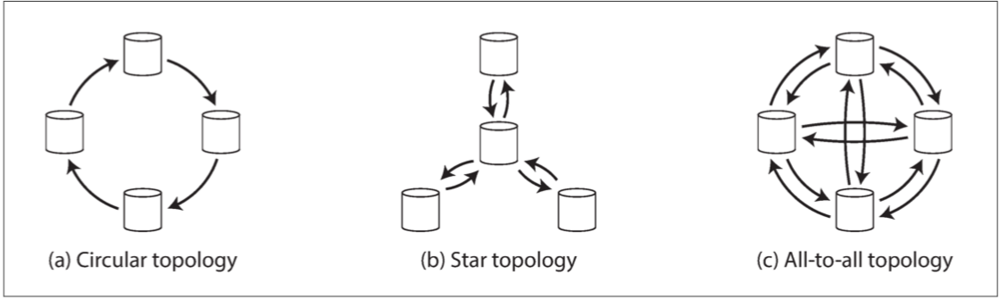
图 5-8 三个可以设置多领导者复制的示例拓扑。
最普遍的拓扑是全部到全部（[图 5-8 c]），其中每个领导者将其写入每个其他领导。但是，也会使用更多受限制的拓扑：例如，默认情况下，MySQL 仅支持环形拓扑（circular topology）【34】，其中每个节点接收来自一个节点的写入，并将这些写入（加上自己的任何写入）转发给另一个节点。另一种流行的拓扑结构具有星形的形状 v。个指定的根节点将写入转发给所有其他节点。星型拓扑可以推广到树。
不要与星型模式混淆（请参阅 “分析模式：星型还是雪花”），其中描述了数据模型的结构，而不是节点之间的通信拓扑。
在圆形和星形拓扑中，写入可能需要在到达所有副本之前通过多个节点。因此，节点需要转发从其他节点收到的数据更改。为了防止无限复制循环，每个节点被赋予一个唯一的标识符，并且在复制日志中，每个写入都被标记了所有已经通过的节点的标识符【43】。当一个节点收到用自己的标识符标记的数据更改时，该数据更改将被忽略，因为节点知道它已经被处理。
循环和星型拓扑的问题是，如果有节点发生故障，则可能会中断其他节点之间的复制消息流，导致它们无法通信，直到节点修复。拓扑结构可以重新配置为在发生故障的节点上工作，但在大多数部署中，这种重新配置必须手动完成。更密集连接的拓扑结构（例如全部到全部）的容错性更好，因为它允许消息沿着不同的路径传播，避免单点故障。
另一方面，全连接拓扑也可能有问题。特别是，一些网络链接可能比其他网络链接更快（例如，由于网络拥塞），结果是一些复制消息可能 “超过” 其他复制消息，如图 5-9 所示。
{kind=link}
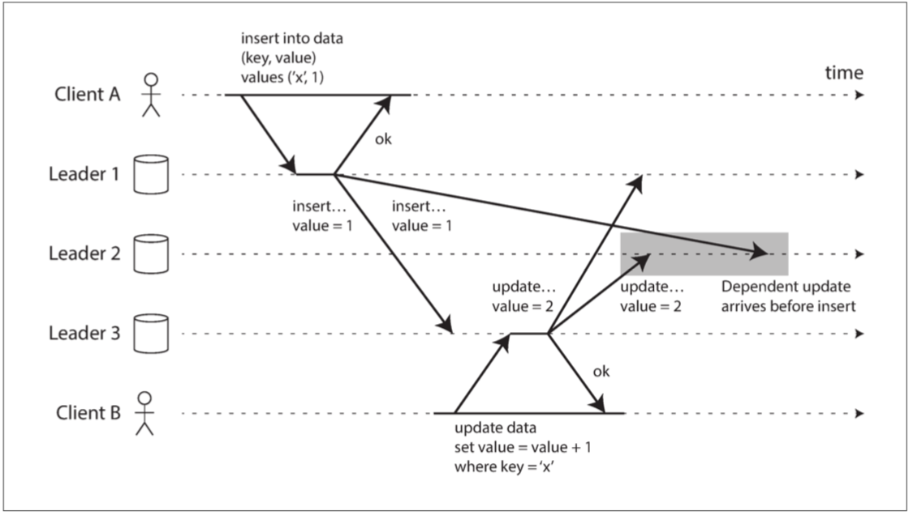
图 5-9 使用多主程序复制时，可能会在某些副本中写入错误的顺序。
在图 5-9 中，客户端 A 向 Leader One 的表中插入一行，客户端 B 在主库 3 上更新该行。然而，主库 2 可以以不同的顺序接收写入：它可以首先接收更新（其中，从它的角度来看，是对数据库中不存在的行的更新），并且仅在稍后接收到相应的插入（其应该在更新之前）。
这是一个因果关系的问题，类似于我们在 “一致前缀读” 中看到的：更新取决于先前的插入，所以我们需要确保所有节点先处理插入，然后再处理更新。仅仅在每一次写入时添加一个时间戳是不够的，因为时钟不可能被充分地同步，以便在主库 2 处正确地排序这些事件（见第 8 章）。
要正确排序这些事件，可以使用一种称为版本向量（version vectors）的技术，本章稍后将讨论这种技术（参阅 “检测并发写入”）。然而，冲突检测技术在许多多领导者复制系统中执行得不好。例如，在撰写本文时，PostgreSQL BDR 不提供写入的因果排序【27】，而 Tungsten Replicator for MySQL 甚至不尝试检测冲突【34】。
如果您正在使用具有多领导者复制功能的系统，那么应该了解这些问题，仔细阅读文档，并彻底测试数据库，以确保它确实提供了您认为具有的保证。
无主模型
- 有主模型：由主副本决定写入顺序，从副本在写入上不直接和客户端打交道，只是重放其对应的主副本的写入顺序（也可以理解为主副本为从副本的客户端）。
- 无主模型：允许任何副本接受写入。
在关系数据库时代，无主模型已经快被忘却。从 Amazon 的 Dynamo 论文开始，无主模型又重新大放异彩，Riak，Cassandra 和 Voldemort 都受其启发，可以统称为 Dynamo 流（Dynamo-style）。
奇特的是，Amazon 的一款数据库产品 DynamoDB，和 Dynamo 并不是一个东西。
通常来说，在无主模型中，写入时可以：
- 由客户端直接写入副本。
- 由协调者（coordinator） 接收写入，转发给多副本。但与主副本不同，协调者并不执行特定的写入顺序。
这种设计上的差异对数据库的使用方式有着深远的影响。
有节点故障时的写入
基于主副本（leader-based）的模型，在有副本故障时，需要进行故障切换。
在无领导配置中，故障切换不存在。图 5-10 显示了发生了什么事情：客户端（用户 1234）并行发送写入到所有三个副本，并且两个可用副本接受写入，但是不可用副本错过了它。假设三个副本中的两个承认写入是足够的：在用户 1234 已经收到两个确定的响应之后，我们认为写入成功。客户简单地忽略了其中一个副本错过了写入的事实。
{kind=link}
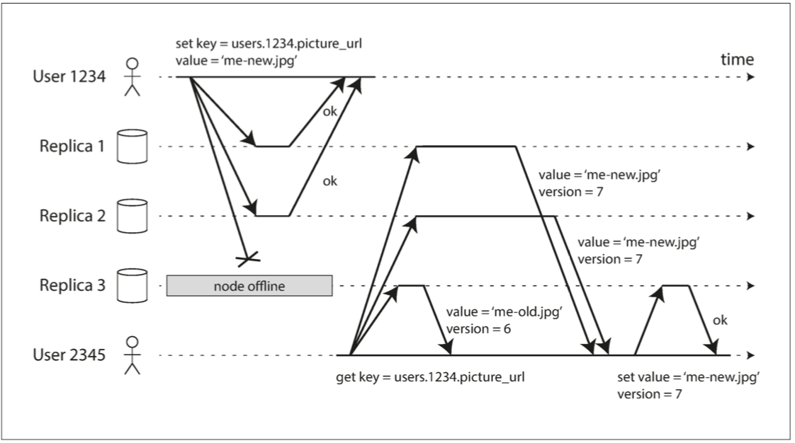
由于写入时，简单的忽略了宕机副本；在读取时，就要多做些事情了：同时读取多个副本，选取最新 * 版本 * 的值。
读修复和反熵复制方案应确保最终将所有数据复制到每个副本。在一个不可用的节点重新联机之后，它如何赶上它错过的写入？
在 Dynamo 风格的数据存储中经常使用两种机制：
读修复（Read repair）
当客户端并行读取多个节点时，它可以检测到任何陈旧的响应。例如，在图 5-10 中，用户 2345 获得了来自 Replica 3 的版本 6 值和来自副本 1 和 2 的版本 7 值。客户端发现副本 3 具有陈旧值，并将新值写回复制品。这种方法适用于频繁阅读的值。
反熵过程（Anti-entropy process）
此外，一些数据存储具有后台进程，不断查找副本之间的数据差异，并将任何缺少的数据从一个副本复制到另一个副本。与基于领导者的复制中的复制日志不同，此反熵过程不会以任何特定的顺序复制写入，并且在复制数据之前可能会有显著的延迟。
并不是所有的系统都实现了这两个；例如，Voldemort 目前没有反熵过程。请注意，如果没有反熵过程，某些副本中很少读取的值可能会丢失，从而降低了持久性，因为只有在应用程序读取值时才执行读修复。
读写的法定人数
如果有 n 个副本，每个写入必须由 w 节点确认才能被认为是成功的，并且我们必须至少为每个读取查询 r 个节点。 （在我们的例子中，\(n = 3，w = 2，r = 2\)）。只要 \(w + r> n\)，我们期望在读取时获得最新的值，因为 r 个读取中至少有一个节点是最新的。遵循这些 r 值，w 值的读写称为法定人数（quorum）的读和写。【44】 ，你可以认为，r 和 w 是有效读写所需的最低票数。
在 Dynamo 风格的数据库中，参数 n，w 和 r 通常是可配置的。一个常见的选择是使 n 为奇数（通常为 3 或 5）并设置 \(w = r =（n + 1）/ 2\)（向上取整）。但是可以根据需要更改数字。例如，设置 \(w = n\) 和 \(r = 1\) 的写入很少且读取次数较多的工作负载可能会受益。这使得读取速度更快，但具有只有一个失败节点导致所有数据库写入失败的缺点。
集群中可能有多于 n 的节点。（集群的机器数可能多于副本数目），但是任何给定的值只能存储在 n 个节点上。 这允许对数据集进行分区，从而支持可以放在一个节点上的数据集更大的数据集。 将在第 6 章回到分区。
仲裁条件 \(w + r> n\) 允许系统容忍不可用的节点：
- 如果 \(w <n\)，如果节点不可用，我们仍然可以处理写入。
- 如果 \(r <n\)，如果节点不可用，我们仍然可以处理读取。
- 对于 \(n = 3，w = 2，r = 2\)，我们可以容忍一个不可用的节点。
- 对于 \(n = 5，w = 3，r = 3\)，我们可以容忍两个不可用的节点。 这个案例如图 5-11 所示。
- 通常，读取和写入操作始终并行发送到所有 n 个副本。 参数 w 和 r 决定我们等待多少个节点，即在我们认为读或写成功之前，有多少个节点需要报告成功。
{kind=link}
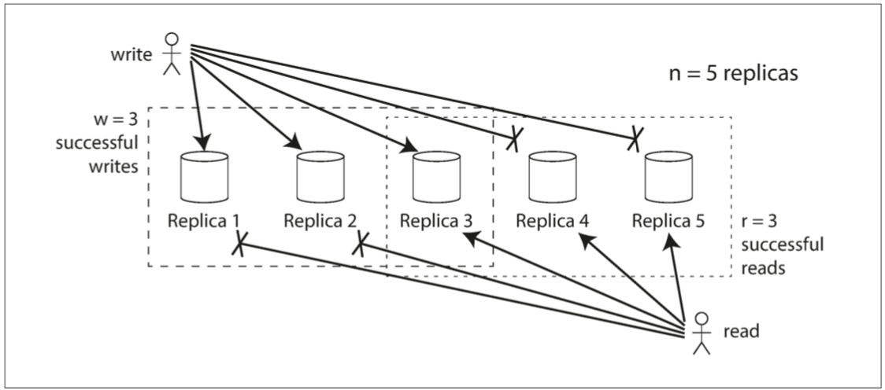
图 5-11 如果 \(w + r > n\)，读取 r 个副本，至少有一个 r 副本必然包含了最近的成功写入
如果少于所需的 w 或 r 节点可用，则写入或读取将返回错误。 由于许多原因，节点可能不可用：因为由于执行操作的错误（由于磁盘已满而无法写入）导致节点关闭（崩溃，关闭电源），由于客户端和服务器之间的网络中断 节点，或任何其他原因。 我们只关心节点是否返回了成功的响应，而不需要区分不同类型的错误。
仲裁一致性的局限性
如果有 n 个副本，选择 w 和 r 使得 \(w + r> n\)，通常可以期望每个读取返回为一个键写的最近的值。
- 写节点集合和读节点集合必然存在重叠。
- 读节点中必须至少有一个具有最新值的节点（如图 5-11 所示）
通常，r 和 w 被选为多数（超过 \(n/2\) ）节点，因为这确保了 \(w + r> n\)，同时仍然容忍多达 \(n/2\) 个节点故障。但是，法定人数不一定必须是大多数，只是读写使用的节点交集至少需要包括一个节点。其他法定人数的配置是可能的，这使得分布式算法的设计有一定的灵活性【45】。
您也可以将 w 和 r 设置为较小的数字，以使 \(w + r≤n\)（即法定条件不满足）。在这种情况下，读取和写入操作仍将被发送到 n 个节点，但操作成功只需要少量的成功响应。
较小的 w 和 r 更有可能会读取过时的数据，因为您的读取更有可能不包含具有最新值的节点。另一方面，这种配置允许更低的延迟和更高的可用性：如果存在网络中断，并且许多副本变得无法访问，则可以继续处理读取和写入的机会更大。只有当可达副本的数量低于 w 或 r 时，数据库才分别变得不可用于写入或读取。
但是，即使在 \(w + r> n\) 的情况下，也可能存在返回陈旧值的边缘情况。这取决于实现，但可能的情况包括：
- 如果使用松散的法定人数（见 “松散法定人数与带提示的接力”），w 个写入和 r 个读取落在完全不同的节点上，因此 r 节点和 w 之间不再保证有重叠节点【46】。
- 如果两个写入同时发生，不清楚哪一个先发生。在这种情况下，唯一安全的解决方案是合并并发写入（请参阅第 171 页的 “处理写入冲突”）。如果根据时间戳（最后写入胜利）挑选出胜者，则由于时钟偏差 [35]，写入可能会丢失。
- 如果写操作与读操作同时发生，写操作可能仅反映在某些副本上。在这种情况下，不确定读取是返回旧值还是新值。
- 如果写操作在某些副本上成功，而在其他节点上失败（例如，因为某些节点上的磁盘已满），在小于 w 个副本上写入成功。所以整体判定写入失败，但整体写入失败并没有在写入成功的副本上回滚。这意味着如果一个写入虽然报告失败，后续的读取仍然可能会读取这次失败写入的值【47】。
- 如果携带新值的节点失败，需要读取其他带有旧值的副本。并且其数据从带有旧值的副本中恢复，则存储新值的副本数可能会低于 w，从而打破法定人数条件。
- 即使一切工作正常，有时也会不幸地出现关于时序（timing）的边缘情况
因此，尽管法定人数似乎保证读取返回最新的写入值，但在实践中并不那么简单。 Dynamo 风格的数据库通常针对可以忍受最终一致性的用例进行优化。允许通过参数 w 和 r 来调整读取陈旧值的概率，但把它们当成绝对的保证是不明智的。
尤其是，通常没有得到 “与延迟有关的问题”（读取您的写入，单调读取或一致的前缀读取）中讨论的保证，因此前面提到的异常可能会发生在应用程序中。更强有力的保证通常需要事务或共识。我们将在第七章和第九章回到这些话题。
监控落后程度
从运维的角度来看，监视数据库是否返回最新的结果是很重要的。即使应用可以容忍陈旧的读取，您也需要了解复制的健康状况。如果显著落后，应该提醒您，以便您可以调查原因（例如，网络中的问题或超载节点）。
对于基于领导者的复制，数据库通常会公开复制滞后的度量标准，您可以将其提供给监视系统。这是可能的，因为写入按照相同的顺序应用于领导者和追随者，并且每个节点在复制日志中具有一个位置（在本地应用的写入次数）。通过从领导者的当前位置中减去随从者的当前位置，您可以测量复制滞后量。
然而，在无领导者复制的系统中，没有固定的写入顺序，这使得监控变得更加困难。而且，如果数据库只使用读修复（没有反熵过程），那么对于一个值可能会有多大的限制是没有限制的 - 如果一个值很少被读取，那么由一个陈旧副本返回的值可能是古老的。
已经有一些关于衡量无主复制数据库中的复制陈旧度的研究，并根据参数 n，w 和 r 来预测陈旧读取的预期百分比【48】。不幸的是，这还不是很常见的做法，但是将过时测量值包含在数据库的标准度量标准中是一件好事。最终的一致性是故意模糊的保证，但是对于可操作性来说，能够量化 “最终” 是很重要的。
松散法定人数与带提示的接力
合理配置的法定人数可以使数据库无需故障切换即可容忍个别节点的故障。也可以容忍个别节点变慢，因为请求不必等待所有 n 个节点响应 —— 当 w 或 r 节点响应时它们可以返回。对于需要高可用、低延时、且能够容忍偶尔读到陈旧值的应用场景来说，这些特性使无主复制的数据库很有吸引力。
然而，法定人数（如迄今为止所描述的）并不像它们可能的那样具有容错性。网络中断可以很容易地将客户端从大量的数据库节点上切断。虽然这些节点是活着的，而其他客户端可能能够连接到它们，但是从数据库节点切断的客户端，它们也可能已经死亡。在这种情况下，剩余的可用节点可能会少于可用节点，因此客户端可能无法达到法定人数。
在一个大型的群集中（节点数量明显多于 n 个），网络中断期间客户端可能连接到某些数据库节点，而不是为了为特定值组成法定人数的节点们。在这种情况下，数据库设计人员需要权衡一下：
- 将错误返回给我们无法达到 w 或 r 节点的法定数量的所有请求是否更好？
- 或者我们是否应该接受写入，然后将它们写入一些可达的节点，但不在 n 值通常存在的 n 个节点之间？
后者被认为是一个松散的法定人数（sloppy quorum）【37】：写和读仍然需要 w 和 r 成功的响应，但是那些可能包括不在指定的 n 个 “主” 节点中的值。比方说，如果你把自己锁在房子外面，你可能会敲开邻居的门，问你是否可以暂时停留在沙发上。
一旦网络中断得到解决，代表另一个节点临时接受的一个节点的任何写入都被发送到适当的 “本地” 节点。这就是所谓的带提示的接力（hinted handoff）。 （一旦你再次找到你的房子的钥匙，你的邻居礼貌地要求你离开沙发回家。）
松散法定人数对写入可用性的提高特别有用：只要有任何 w 节点可用，数据库就可以接受写入。然而，这意味着即使当 \(w + r> n\) 时，也不能确定读取某个键的最新值，因为最新的值可能已经临时写入了 n 之外的某些节点【47】。
因此，在传统意义上，一个松散的法定人数实际上不是一个法定人数。这只是一个保证，即数据存储在 w 节点的地方。不能保证 r 节点的读取直到提示已经完成。
在所有常见的 Dynamo 实现中，松散法定人数是可选的。在 Riak 中，它们默认是启用的，而在 Cassandra 和 Voldemort 中它们默认是禁用的【46,49,50】。
运维多个数据中心
无主复制适用于多数据中心操作，因为它旨在容忍冲突的并发写入，网络中断和延迟尖峰。
Cassandra 和 Voldemort 在正常的无主模型中实现了他们的多数据中心支持：副本的数量 n 包括所有数据中心的节点，在配置中，您可以指定每个数据中心中您想拥有的副本的数量。无论数据中心如何，每个来自客户端的写入都会发送到所有副本，但客户端通常只等待来自其本地数据中心内的法定节点的确认，从而不会受到跨数据中心链路延迟和中断的影响。对其他数据中心的高延迟写入通常被配置为异步发生，尽管配置有一定的灵活性【50,51】。
Riak 将客户端和数据库节点之间的所有通信保持在一个数据中心本地，因此 n 描述了一个数据中心内的副本数量。数据库集群之间的跨数据中心复制在后台异步发生，其风格类似于多领导者复制【52】。
检测并发写入
Dynamo 风格的数据库允许多个客户端同时写入相同的 Key，这意味着即使使用严格的法定人数也会发生冲突。这种情况与多领导者复制相似（参阅 “处理写入冲突”），但在 Dynamo 样式的数据库中，在读修复或带提示的接力期间也可能会产生冲突。
问题在于，由于可变的网络延迟和部分故障，事件可能在不同的节点以不同的顺序到达。例如，图 5-12 显示了两个客户机 A 和 B 同时写入三节点数据存储区中的键 X：
{kind=link}
- 节点 1 接收来自 A 的写入，但由于暂时中断，从不接收来自 B 的写入。
- 节点 2 首先接收来自 A 的写入，然后接收来自 B 的写入。
- 节点 3 首先接收来自 B 的写入，然后从 A 写入。
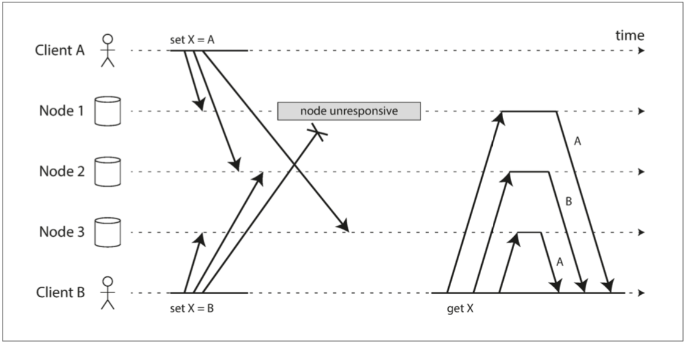
图 5-12 并发写入 Dynamo 风格的数据存储：没有明确定义的顺序。
如果每个节点只要接收到来自客户端的写入请求就简单地覆盖了某个键的值，那么节点就会永久地不一致，如图 5-12 中的最终获取请求所示：节点 2 认为 X 的最终值是 B，而其他节点认为值是 A 。
为了最终达成一致，副本应该趋于相同的值。如何做到这一点？有人可能希望复制的数据库能够自动处理，但不幸的是，大多数的实现都很糟糕：如果你想避免丢失数据，你（应用程序开发人员）需要知道很多有关数据库冲突处理的内部信息。
在 “处理写冲突” 一节中已经简要介绍了一些解决冲突的技术。在总结本章之前，让我们来更详细地探讨这个问题。
最后写入胜利（丢弃并发写入）
实现最终融合的一种方法是声明每个副本只需要存储最 “最近” 的值，并允许 “更旧” 的值被覆盖和抛弃。只要有一种明确的方式来确定哪个写是 “最近的”，并且每个写入最终都被复制到每个副本，那么复制最终会收敛到相同的值。
正如 “最近” 的引号所表明的，这个想法其实颇具误导性。在图 5-12 的例子中，当客户端向数据库节点发送写入请求时，客户端都不知道另一个客户端，因此不清楚哪一个先发生了。事实上，说 “发生” 是没有意义的：我们说写入是并发（concurrent）的，所以它们的顺序是不确定的。
即使写入没有自然的排序，我们也可以强制任意排序。例如，可以为每个写入附加一个时间戳，挑选最 “最近” 的最大时间戳，并丢弃具有较早时间戳的任何写入。这种冲突解决算法被称为最后写入胜利（LWW, last write wins），是 Cassandra 【53】唯一支持的冲突解决方法，也是 Riak 【35】中的一个可选特征。
LWW 实现了最终收敛的目标，但以持久性为代价：如果同一个 Key 有多个并发写入，即使它们都被报告为客户端成功（因为它们被写入 w 个副本），但只有一个写入将存活，而其他写入将被静默丢弃。此外，LWW 甚至可能会删除不是并发的写入，我们将在的 “有序事件的时间戳” 中讨论。
- 有一些情况，如缓存，其中丢失的写入可能是可以接受的。
- 如果丢失数据不可接受，LWW 是解决冲突的一个很烂的选择。
在数据库中使用 LWW 的唯一安全方法是使用唯一的、不可变的 key，从而避免对同一个 key 进行并发更新。例如，Cassandra 推荐使用的方法是使用 UUID 作为键，从而为每个写操作提供一个唯一的键【53】。
“happens before” 关系和并发
如何判断两个操作是否是并发的：
- 在图 5-9 中，两个写入不是并发的：A 的插入发生在 B 的递增之前，因为 B 递增的值是 A 插入的值。换句话说，B 的操作建立在 A 的操作上，所以 B 的操作必须在 A 之后发生。我们也可以说 B 是因果依赖（causally dependent）于 A
- 另一方面，图 5-12 中的两个写入是并发的：当每个客户端启动操作时，它不知道另一个客户端也正在执行操作同样的 Key。因此，操作之间不存在因果关系。
定义 A happens before B：操作 B 了解操作 A，或者依赖于 A，或者以某种方式构建于操作 A 之上
如果两个操作都不在另一个之前发生，那么两个操作是并发的。
因此，两个操作 A 和 B 的关系，只有三种可能性：
- A happens before B
- B happens before A
- A 和 B 并发
我们需要的是一个算法来告诉我们两个操作是否是并发的。如果一个操作发生在另一个操作之前，则后面的操作应该覆盖较早的操作，但是如果这些操作是并发的，则存在需要解决的冲突。
并发性，时间和相对性
如果两个操作 “同时” 发生，似乎应该称为并发 —— 但事实上，它们在字面时间上重叠与否并不重要。由于分布式系统中的时钟问题，现实中是很难判断两个事件是否同时发生的，这个问题我们将在第 8 章中详细讨论。
为了定义并发性，确切的时间并不重要：如果两个操作都意识不到对方的存在，就称这两个操作并发，而不管它们发生的物理时间。人们有时把这个原理和狭义相对论的物理学联系起来【54】，它引入了信息不能比光速更快的思想。因此，如果事件之间的时间短于光通过它们之间的距离，那么发生一定距离的两个事件不可能相互影响。
在计算机系统中，即使光速原则上允许一个操作影响另一个操作，但两个操作也可能是并行的。例如，如果网络缓慢或中断，两个操作间可能会出现一段时间间隔，且仍然是并发的，因为网络问题阻止一个操作意识到另一个操作的存在。
捕获 "happens-before" 关系
来看一个算法，它确定两个操作是否为并发的，还是一个在另一个之前。为了简单起见，我们从一个只有一个副本的数据库开始。一旦我们已经制定了如何在单个副本上完成这项工作，我们可以将该方法概括为具有多个副本的无领导者数据库。
图 5-13 显示了两个客户端同时向同一购物车添加项目。 （如果这样的例子让你觉得太麻烦了，那么可以想象，两个空中交通管制员同时把飞机添加到他们正在跟踪的区域）最初，购物车是空的。在它们之间，客户端向数据库发出五次写入：
- 客户端 1 将牛奶加入购物车。这是该键的第一次写入，服务器成功存储了它并为其分配版本号 1，最后将值与版本号一起回送给客户端。
- 客户端 2 将鸡蛋加入购物车，不知道客户端 1 同时添加了牛奶（客户端 2 认为它的鸡蛋是购物车中的唯一物品）。服务器为此写入分配版本号 2，并将鸡蛋和牛奶存储为两个单独的值。然后它将这两个值都反回给客户端 2 ，并附上版本号 2 。
- 客户端 1 不知道客户端 2 的写入，想要将面粉加入购物车，因此认为当前的购物车内容应该是 [牛奶，面粉]。它将此值与服务器先前向客户端 1 提供的版本号 1 一起发送到服务器。服务器可以从版本号中知道 [牛奶，面粉] 的写入取代了 [牛奶] 的先前值，但与 [鸡蛋] 的值是并发的。因此，服务器将版本 3 分配给 [牛奶，面粉]，覆盖版本 1 值 [牛奶]，但保留版本 2 的值 [蛋]，并将所有的值返回给客户端 1 。
- 同时，客户端 2 想要加入火腿，不知道客端户 1 刚刚加了面粉。客户端 2 在最后一个响应中从服务器收到了两个值 [牛奶] 和 [蛋]，所以客户端 2 现在合并这些值，并添加火腿形成一个新的值，[鸡蛋，牛奶，火腿]。它将这个值发送到服务器，带着之前的版本号 2 。服务器检测到新值会覆盖版本 2 [鸡蛋]，但新值也会与版本 3 [牛奶，面粉] 并发，所以剩下的两个是 v3 [牛奶，面粉]，和 v4：[鸡蛋，牛奶，火腿]
- 最后，客户端 1 想要加培根。它以前在 v3 中从服务器接收 [牛奶，面粉] 和 [鸡蛋]，所以它合并这些，添加培根，并将最终值 [牛奶，面粉，鸡蛋，培根] 连同版本号 v3 发往服务器。这会覆盖 v3 [牛奶，面粉]（请注意 [鸡蛋] 已经在最后一步被覆盖），但与 v4 [鸡蛋，牛奶，火腿] 并发，所以服务器保留这两个并发值。
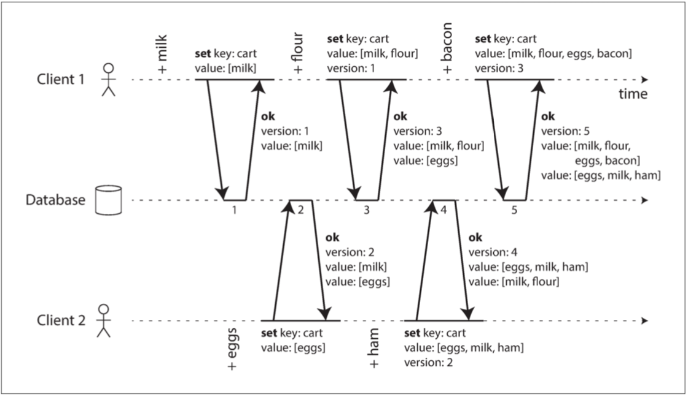
图 5-13 捕获两个客户端之间的因果关系，同时编辑购物车。
图 5-13 中的操作之间的数据流如图 5-14 所示。 箭头表示哪个操作发生在其他操作之前，意味着后面的操作知道或依赖于较早的操作。 在这个例子中，客户端永远不会完全掌握服务器上的数据，因为总是有另一个操作同时进行。 但是，旧版本的值最终会被覆盖，并且不会丢失任何写入。
{kind=link}
{kind=link}
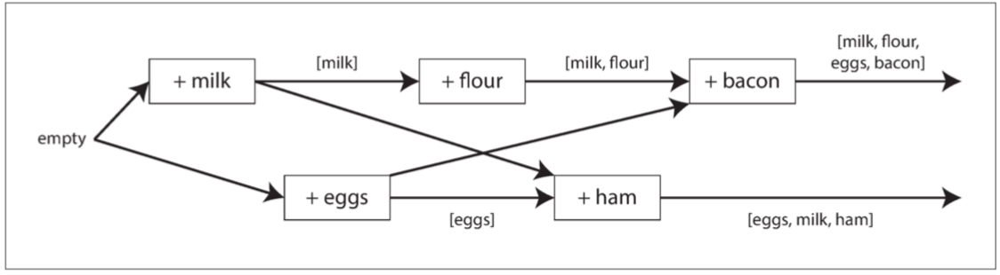
图 5-14 图 5-13 中的因果依赖关系图。
请注意，服务器可以通过查看版本号来确定两个操作是否是并发的 —— 它不需要解释该值本身（因此该值可以是任何数据结构）。该算法的工作原理如下：
- 服务器为每个键保留一个版本号，每次写入键时都增加版本号，并将新版本号与写入的值一起存储。
- 当客户端读取键时，服务器将返回所有未覆盖的值以及最新的版本号。客户端在写入前必须读取。
- 客户端写入键时，必须包含之前读取的版本号，并且必须将之前读取的所有值合并在一起。 （来自写入请求的响应可以像读取一样，返回所有当前值，这使得我们可以像购物车示例那样连接多个写入。）
- 当服务器接收到具有特定版本号的写入时，它可以覆盖该版本号或更低版本的所有值（因为它知道它们已经被合并到新的值中），但是它必须保持所有值更高版本号（因为这些值与传入的写入同时发生）。
当一个写入包含前一次读取的版本号时，它会告诉我们写入的是哪一种状态。如果在不包含版本号的情况下进行写操作，则与所有其他写操作并发，因此它不会覆盖任何内容 —— 只会在随后的读取中作为其中一个值返回。
合并同时写入的值
这种算法可以确保没有数据被无声地丢弃，但不幸的是，客户端需要做一些额外的工作：如果多个操作并发发生，则客户端必须通过合并并发写入的值来擦屁股。 Riak 称这些并发值兄弟（siblings）。
合并兄弟值，本质上是与多领导者复制中的冲突解决相同的问题，我们先前讨论过（参阅 “处理写入冲突”）。一个简单的方法是根据版本号或时间戳（最后写入胜利）选择一个值，但这意味着丢失数据。所以，你可能需要在应用程序代码中做更聪明的事情。
以购物车为例，一种合理的合并兄弟方法就是集合求并。在图 5-14 中，最后的两个兄弟是 [牛奶，面粉，鸡蛋，熏肉] 和 [鸡蛋，牛奶，火腿]。注意牛奶和鸡蛋出现在两个，即使他们每个只写一次。合并的价值可能是像 [牛奶，面粉，鸡蛋，培根，火腿]，没有重复。
然而，如果你想让人们也可以从他们的手推车中删除东西，而不是仅仅添加东西，那么把兄弟求并可能不会产生正确的结果：如果你合并了两个兄弟手推车，并且只在其中一个兄弟值里删掉了它，那么被删除的项目会重新出现在兄弟的并集中【37】。为了防止这个问题，一个项目在删除时不能简单地从数据库中删除；相反，系统必须留下一个具有合适版本号的标记，以指示合并兄弟时该项目已被删除。这种删除标记被称为墓碑（tombstone）。 （我们之前在 “哈希索引” 中的日志压缩的上下文中看到了墓碑。）
因为在应用程序代码中合并兄弟是复杂且容易出错的，所以有一些数据结构被设计出来用于自动执行这种合并，如 “自动冲突解决” 中讨论的。例如，Riak 的数据类型支持使用称为 CRDT 的数据结构家族【38,39,55】可以以合理的方式自动合并兄弟，包括保留删除。
版本向量
图 5-13 中的示例只使用一个副本。当有多个副本但没有领导者时，算法如何修改？
图 5-13 使用单个版本号来捕获操作之间的依赖关系，但是当多个副本并发接受写入时，这是不够的。相反，除了对每个键使用版本号之外，还需要在每个副本中使用版本号。每个副本在处理写入时增加自己的版本号，并且跟踪从其他副本中看到的版本号。这个信息指出了要覆盖哪些值，以及保留哪些值作为兄弟。
所有副本的版本号集合称为版本向量（version vector）【56】。这个想法的一些变体正在使用，但最有趣的可能是在 Riak 2.0 【58,59】中使用的分散版本矢量（dotted version vector）【57】。我们不会深入细节，但是它的工作方式与我们在购物车示例中看到的非常相似。
与图 5-13 中的版本号一样，当读取值时，版本向量会从数据库副本发送到客户端，并且随后写入值时需要将其发送回数据库。 （Riak 将版本向量编码为一个字符串，它称为因果上下文（causal context））。版本向量允许数据库区分覆盖写入和并发写入。
另外，就像在单个副本的例子中，应用程序可能需要合并兄弟。版本向量结构确保从一个副本读取并随后写回到另一个副本是安全的。这样做可能会创建兄弟，但只要兄弟姐妹合并正确，就不会丢失数据。
版本向量和向量时钟
版本向量有时也被称为矢量时钟，即使它们不完全相同。 差别很微妙 —— 请参阅参考资料的细节【57,60,61】。 简而言之，在比较副本的状态时，版本向量是正确的数据结构。
本章小结
本章主要讨论了复制这一技术。
复制的目的
高可用性
即使在一台机器（或多台机器，或整个数据中心）停机的情况下也能保持系统正常运行
断开连接的操作
允许应用程序在网络中断时继续工作
延迟
将数据放置在距离用户较近的地方，以便用户能够更快地与其交互
可扩展性
能够处理比单个机器更高的读取量可以通过对副本进行读取来处理
尽管是一个简单的目标 - 在几台机器上保留相同数据的副本，但复制却是一个非常棘手的问题。它需要仔细考虑并发和所有可能出错的事情，并处理这些故障的后果。至少，我们需要处理不可用的节点和网络中断（甚至不考虑更隐蔽的故障，例如由于软件错误导致的无提示数据损坏）。
复制的三种主要方法
单主复制
客户端将所有写入操作发送到单个节点（领导者），该节点将数据更改事件流发送到其他副本（追随者）。读取可以在任何副本上执行，但从追随者读取可能是陈旧的。
多主复制
客户端发送每个写入到几个领导节点之一，其中任何一个都可以接受写入。领导者将数据更改事件流发送给彼此以及任何跟随者节点。
无主复制
客户端发送每个写入到几个节点，并从多个节点并行读取，以检测和纠正具有陈旧数据的节点。 每种方法都有优点和缺点。单主复制是非常流行的，因为它很容易理解，不需要担心冲突解决。在出现故障节点，网络中断和延迟峰值的情况下，多领导者和无领导者复制可以更加稳健，但以更难以推理并仅提供非常弱的一致性保证为代价。
复制可以是同步的，也可以是异步的，在发生故障时对系统行为有深远的影响。尽管在系统运行平稳时异步复制速度很快，但是在复制滞后增加和服务器故障时要弄清楚会发生什么，这一点很重要。如果一个领导者失败了，并且你推动一个异步更新的追随者成为新的领导者，那么最近承诺的数据可能会丢失。
复制滞后的问题 & 一致性模型
写后读
用户应该总是看到自己提交的数据。
单调读
用户在一个时间点看到数据后，他们不应该在某个早期时间点看到数据。
一致前缀读
用户应该将数据视为具有因果意义的状态：例如，按照正确的顺序查看问题及其答复。
最后，我们讨论了多领导者和无领导者复制方法所固有的并发问题：因为他们允许多个写入并发发生冲突。我们研究了一个数据库可能使用的算法来确定一个操作是否发生在另一个操作之前，或者它们是否同时发生。我们还谈到了通过合并并发更新来解决冲突的方法。
在下一章中，我们将继续研究分布在多个机器上的数据，通过复制的对应方式：将大数据集分割成分区。